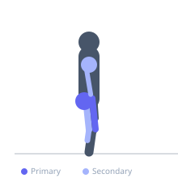
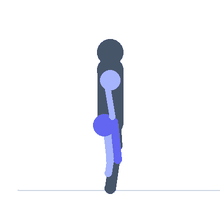

Exercise guide / Prowler Sled Push — Low Handles
Prowler Sled Push — Low Handles
The low-handle prowler push requires the athlete to grip the lower posts of the sled (near ground level), producing a more horizontal body position that places greater demand on the quadriceps and hip extensors through deep knee bend angles. This position resembles a sprint start and trains explosive leg drive at angles highly specific to sprinting acceleration mechanics. Because the sled push involves no eccentric loading phase, it produces minimal muscle damage while still creating a significant training stimulus — making it an ideal tool for high-frequency conditioning or active recovery at light loads.
Primary muscles
vastus lateralis
vastus medialis
gluteus maximus
Secondary muscles
biceps femoris long head
gastrocnemius medial
deltoid anterior
triceps lateral head
Stabilizers
erector spinae
transverse abdominis
Equipment


Starting position
- Grip the low handles of the prowler sled with both hands. Lean the body forward at approximately 45–60° from vertical. Drive the feet into the floor behind the body in a sprint-start-like position.
Setup
- Load the sled to the target weight. Ensure the pushing surface is astroturf, smooth concrete, or appropriate sled surface. Use smooth-soled shoes on turf sleds, training shoes on concrete.
Steps
- Step 1: Grip the low handles and position the body in a forward-leaning, athletic push position with arms nearly straight.
- Step 2: Drive one foot into the ground forcefully and push the sled forward, then immediately drive the other foot. Quick, alternating leg drive is the goal.
- Step 3: Maintain a rigid body position from the hands through the core to the pushing leg — do not let the hips drop or rise excessively.
- Step 4: Push hard for the prescribed distance, maintaining maximum effort throughout.
- Step 5: At the end of the distance, slow the sled and release the handles.
Coaching cues
- Hips back, chest forward — stay horizontal
- Drive the foot through the floor with every step
- Push the earth away — do not lean on the sled
Breathing
- Breathe forcefully throughout. Do not hold the breath. Exhale in short, sharp bursts with each push step.
Range of motion
- Full leg extension on each push step. Distance per set: 20–40 metres for strength, 40–80 metres for conditioning.
Tempo
- Sprint: 20m maximum effort × 6–10 sets. Rest 60–120 seconds. Conditioning: 40m at moderate load × 4–6 sets. Rest 60–90 seconds.
Common mistakes
- Letting the hips rise too high, reducing the low-handle advantage and shifting the load from quads to lower back
- Taking too long, slow strides — fast, short steps generate more power and speed
- Not maintaining a rigid upper body — the core must transmit force from legs to handles without buckling
Safety
- Ensure the surface is appropriate for the sled type — wrong surface combinations damage the sled and create uneven resistance
- Check that weight plates are secured before pushing at speed
Training
- strength: 1–4 reps
- endurance: 2–6 reps
- strength: 4–8 sets
- Rest: {'strength': 120, 'endurance': 60}